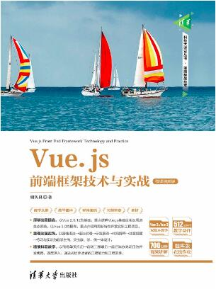

<!DOCTYPE html>
<html lang="en">
<head>
    <meta charset="UTF-8">
    <meta name="viewport" content="width=device-width, initial-scale=1.0">
    <title>张浩2309030239</title>
    <style type="text/css">
        #div1 {
          margin: 0;
          padding: 0;
          width: 600px;
          background: #ededed;
          text-align: center;
        }
        img {
          height: 250px;
        }
        p {
          text-indent: 2em;
          text-align: left;
        }
      </style>
</head>
<body>
    <script src="./vue.global.js"></script>

    <!-- 视图 -->
    <div id="app"></div>

    <!-- 实例 -->
    <script>
        const { createApp } = Vue
        createApp({
            data() {
                return {
                    bookName:"Vue.js前段框架技术与实战",
                    description:"Vue.js是一套用于构建用户界面的渐进式框架，是目前流行的三大前端框架之一。本书以Vue 2.6.12为基础，重点讲解Vue生产环境配置与开发工具的使用、基础语法、指令、组件开发及周边生态系统；以Vue 3.0为提高，重点介绍新版本改进和优化之处以及如何利用新版本开发应用程序。",
                    divStyle:"content"
                }
            },
            template: `
              <div id="div1">
                <div></div>
                <div :class="divStyle">
                  <h3>{{ bookName }}简介</h3>
                  <p>{{ description }}</p>
                </div>
              </div>
            `
        }).mount("#app")
    </script>
</body>
</html>